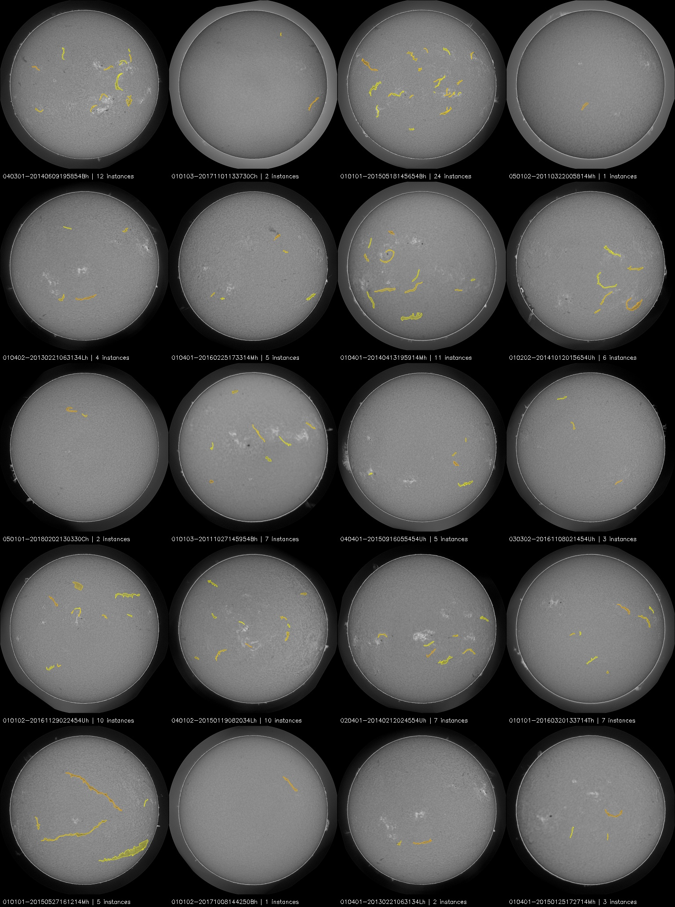
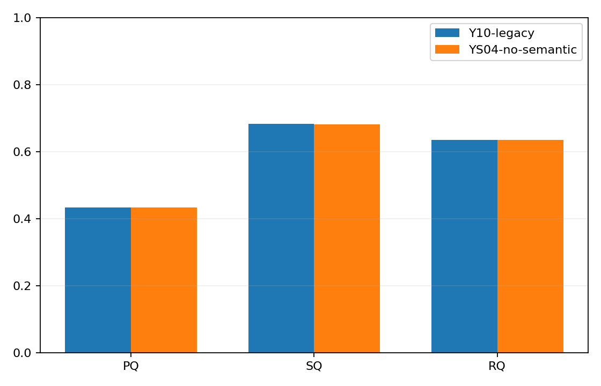
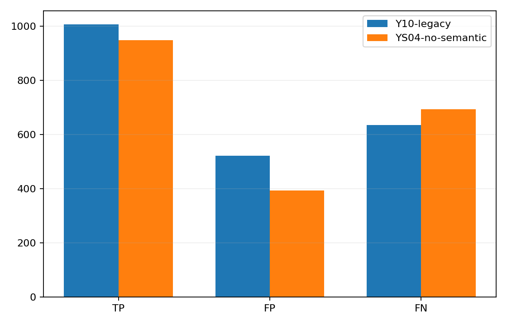
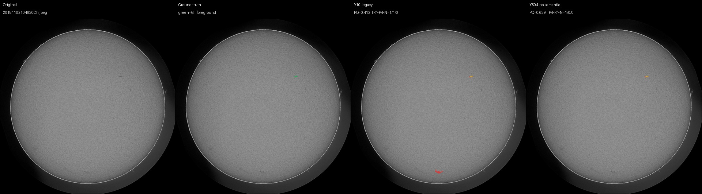
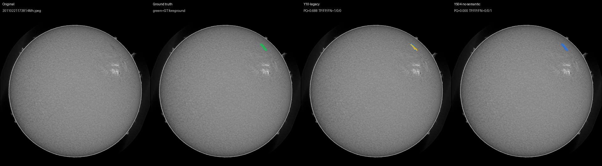

The competition requires single-class instance segmentation of solar filaments. Filaments are elongated absorption structures whose contrast, width and topology vary substantially across observing conditions. Dark sunspots and acquisition artifacts can resemble compact filament fragments, while faint filament endpoints are easily lost after resizing.
The released training data contain 707 physical images but 1,154 annotation records because some observations were independently labeled up to three times. Directly treating every record as a new image would over-weight repeated observations and leak nearly identical pixels across folds. We therefore group all annotation records belonging to the same physical image before either splitting or training.
Independent annotation passes disagree on weak structures, instance extent, fragmentation and whether small dark regions are true filaments. Pairwise annotator PQ is only approximately 0.3596 when the official IoU>0.5 matching rule is applied to the 145 two-pass observations (559 TP, 476 FP and 393 FN). This is a diagnostic of label ambiguity rather than a claimed performance ceiling: a model can be morphologically plausible while disagreeing with one specific annotation realization.
For the final training representation, repeated masks are clustered by overlap and retained when supported by a majority of available passes. Each physical image contributes exactly once. Compared with majority labels, union-expanded boundaries lowered Fold0/Fold1 PQ by 0.0207/0.0382; selecting a single annotation pass also underperformed in our early public comparison. We therefore retain majority consensus as the least unstable representation.
The official objective is Panoptic Quality (PQ), which combines matched-mask fidelity and instance recognition:
A prediction and ground-truth instance match only when mask IoU exceeds 0.5. Consequently, lowering confidence may improve recall but can reduce PQ by adding false positives; a slightly better boundary may also convert an unmatched prediction into a true positive. We therefore track PQ, Segmentation Quality (SQ), Recognition Quality (RQ), TP, FP and FN together. The organizer rubric assigns 70% to quantitative comparison and 30% to method, morphology and code quality, so public PQ is evidence rather than the sole selection criterion.
All records of one physical observation stay in the same fold. Two validation procedures are reported explicitly. Y17 uses cross-fold consistency selection: a small predefined grid is compared on Fold0 and Fold1 and a setting is retained only when it improves both. QT01 uses frozen confirmation: its operating point is selected on Fold0 and evaluated unchanged on Fold1. Thus Fold1 is an independent confirmation set for QT01, but not for Y17. Single-fold gains are treated as hypotheses rather than sufficient evidence.
YOLO26m-seg is initialized from the official segmentation checkpoint and trained on 707 majority-consensus images at 2048 pixels (batch 4, AMP, seed 42). Mosaic, mixup and copy-paste are disabled; mild geometric and photometric augmentation is retained. Holding the model and majority labels fixed, increasing 1536 to 2048 improved Fold0 PQ 0.4257→0.4342 and Fold1 0.4356→0.4620; the corresponding full-data public score rose 0.37→0.38.
0.001, YOLO NMS IoU
0.70 and max_det=100. Every post-processing configuration is evaluated
from the same cached JSONL predictions, so threshold comparisons do not repeat GPU inference.Y17-V uses the standard objectives and 22 full-data epochs. For each flip, masks are restored to original 2048 × 2048 coordinates. Candidates from all views are sorted by score; when mask IoU with an already accepted candidate is at least 0.50, the lower-score duplicate is removed. This “best-mask” rule preserves single-view detections and avoids boundary blurring from pixel averaging.
| Search axis | Values evaluated | Selected |
|---|---|---|
| TTA set | original+hflip; original+vflip; original+hflip+vflip | original+vflip |
| confidence | 0.28, 0.32, 0.36, 0.40 | 0.28 |
| minimum area | 256, 320 pixels | 320 |
| selection | 24 predefined combinations; require improvement on both folds | mean PQ 0.4575 |
The selected setting reaches 0.4430/0.4720 on Fold0/Fold1, then is transferred unchanged to the full model. It yields 1,216 instances on 178/180 test images and public PQ 0.39.
QT01 mixes detached soft mask IoU into the positive task-aligned classification target while keeping assignment and box/mask losses unchanged. For each assigned positive, the predicted prototype mask and its matched ground-truth mask are cropped to the target box before soft IoU is calculated; gradients do not pass through this target:
The 0.5 mixture was fixed by the training ablation rather than leaderboard feedback. It changes confidence calibration and candidate order, not the decoded mask geometry. The 26-epoch model is evaluated with original+horizontal-flip best-mask fusion. A cached evaluator searches 48 Fold0 configurations:
| Search axis | Values / promotion rule | Selected |
|---|---|---|
| confidence | 0.20, .22, .24, .25, .26, .28, .30, .32, .34, .36, .38, .40 | .34 |
| minimum area | 128, 256, 320, 384 pixels | 256 |
| gate | ΔPQ ≥ .0108; SQ drop ≤ .003; FP increase ≤ 50 | pass |
| confirmation | freeze Fold0 setting and evaluate Fold1; no re-tuning | F1 .4651 |
TTA raises Fold0 PQ from 0.4388 to 0.4485 (TP 1,023→1,061; FN 618→580). The frozen setting yields 1,060 instances on 176/180 test images and public PQ 0.39.
Confidence and area are searched jointly: confidence controls the TP/FP operating point, while area suppresses small fragments and changes both RQ and SQ. For every image the final transformation is deterministic:
clean = mask AND NOT occupied;occupied, then encode the cleaned mask as COCO RLE.This score-priority policy prevents double assignment while retaining the strongest instance shape. Audits check 180 image IDs, contiguous instance IDs, decodable dimensions and exactly zero overlapping pixels. Full-data inference reuses OOF-selected parameters; neither test predictions nor leaderboard scores are used for calibration.
The release includes exact configs, cached raw predictions, TTA/fusion code, the fast PQ sweep, RLE construction, audits, checkpoints and SHA256 manifests. Both final CSVs were rebuilt with exact hash matches in the clean Python 3.8.13, PyTorch 1.10.2 and Ultralytics 8.4.15 release environment; the selected checkpoints were originally trained with the repository's Ultralytics 8.4.3 checkout. One executable Notebook covers preparation, both training variants, inference, CSV reconstruction and integrity verification; no external data, test labeling or private test metadata is used.
| Stage | Measured on one RTX A6000 |
|---|---|
| Y17 base training | 22 epochs, 1.119 h, peak log memory ≈33.7 GB |
| QT01 training | 26 epochs, 1 h 33 min 30 s, peak log memory ≈33.7 GB |
| single-view model inference | 52.5 ms/image model time in the Y17 validation log |
| QT01 180-image full pipeline | 7 min 7 s base prediction + 1 min 32 s CSV stage |
| additional horizontal TTA view | 14 min 20 s including mask decode/export and fusion |
| System | Fold0 | Fold1 | Mean | Public |
|---|---|---|---|---|
| Y10/Y13 base | .4342 | .4620 | .4481 | .38 |
| Y17-V | .4430 | .4720 | .4575 | .39 |
| QT01TTAH | .4485 | .4651 | .4568 | .39 |
Bar scale is 0–0.50 PQ. Fold means are used only for relative comparison under the same grouped protocol; public PQ is evaluated on a different image set.


We tested whether the 0.39 plateau was caused by insufficient model capacity or architecture. None of the standalone alternatives surpassed high-resolution YOLO26m.
| Route | Representative result | Public PQ | Decision |
|---|---|---|---|
| YOLO26m-seg | Y17 two-fold .4575 | .39 | retain |
| Mask2Former | two-fold ≈ .4291 | .37 | mask complement only |
| SegFormer ROI | SF01 selective refinement | .37 | stop standalone |
| RF-DETR Seg | R00 full baseline | .29 | stop standalone |
| EUPE ConvNeXt-T | two-fold ≈ .3576 | .30 | stop backbone swap |
| EdgeCrafter | E02 full | .25 | stop standalone |
| YOLO26l-seg | Fold0 .4169 | — | capacity not limiting |
| Question | Experiment | Observed result | Conclusion |
|---|---|---|---|
| Use more annotation foreground? | Y14/Y23 union or merged labels | public .38 | extra foreground adds ambiguity |
| Normalize contrast? | IMG01 robust normalization | public .37 | removes useful intensity cues |
| Increase mask supervision resolution? | YS05B2 native mask | public .38 | not the dominant limit |
| Add separate quality head? | Q01/Q01TTAH | Fold0 gain; public .38 | cross-fold calibration unstable |
| Weight disagreement regions? | DW01/DW01TTAH | public .38/.38 | RQ/SQ trade-off, no transfer |
| Add instance SoftIoU? | IL01 | F0 +.0079; F1 −.0106 | single-fold overfit |
| Oversample difficult images? | DH01 | both folds lower | difficulty is not solved by repetition |
| Use more TTA views? | Y20 multi-view | public .39 | third view adds no gain |
At a low threshold, YOLO candidates cover 91.86% of ground-truth instances,
while the final filtered output covers only 62.09%. An oracle that selects the
best fixed-size candidate subset raises five-fold PQ from approximately 0.4332 to 0.5737
(+0.1405). Here “raw” means stored post-NMS output at confidence 0.001, IoU 0.70 and
max_det=100; it is not the pre-NMS network ceiling. The oracle uses ground truth
only to estimate headroom and is never applied to test inference. The model therefore generates
many useful candidates but does not rank their global retention value accurately.
Learned post-processing did not close this gap. Pairwise ranking reached AUC 0.976–0.984 but improved five-fold PQ by only +0.00025; local visual re-ranking gave +0.00167 and cross-fold fusion +0.00073. Later controls agree: BD01 lowers the two-fold mean .4481→.4441, XM01R gives ΔPQ −.00064, and CS01 is negative on all five folds (mean −.01944). Candidate-level accuracy is insufficient because PQ depends on set size, duplicates, conflicts and TP/FP/FN balance.
Although Mask2Former is weaker as a standalone model, it sometimes produces a more accurate boundary for an instance already detected by YOLO. We pair spatially corresponding YOLO and Mask2Former masks without changing instance count, then use ground truth only as an oracle to estimate the upper bound of choosing the better mask.
The result localizes the useful complementarity: select between two masks for the same detected object, rather than add all model-unique candidates. EdgeCrafter provides only about +0.008 oracle gain. A learned matched-mask selector remains promising, but the initial full-resolution prototype was computationally inefficient and was not used in the final submission.
Completely missed instances are usually faint, narrow or fragmented by low-contrast regions. TTA recovers some of them, but lowering confidence further introduces more false positives than true positives. Some misses also reflect legitimate disagreement among annotators.
Compact dark structures, sunspots and imaging artifacts can receive high objectness. Global appearance classifiers achieve high AUC but do not reliably resolve competition between neighboring or duplicate masks, which limits downstream PQ gain.
Thin endpoints and branching regions remain sensitive to resizing and thresholding. A mask can have visually plausible morphology but remain just below the 0.5 matching threshold. Unconditional refinement and topology repair often improve some boundaries while damaging already-correct masks, producing no stable aggregate gain.


Both outputs pass format and overlap audits. We intentionally avoid candidate union: adding Y17-only candidates to QT01, or vice versa, consistently increases FP and lowers validation PQ. The two independent submissions better represent uncertainty about score calibration and candidate count. Y17-V is selected for robustness and simplicity; QT01TTAH is selected because it alters the learned score target and operating point while retaining nearly identical cross-fold strength, not merely because it has a different experiment identifier.
High-resolution YOLO26m with consensus labels and conservative flip TTA is the most reliable solution for this small, ambiguous dataset. Quality-aware targets offer a competitive second formulation, but do not break the public 0.39 plateau. The strongest remaining opportunity is not larger-scale training; it is structured candidate-set optimization and conservative matched-instance mask selection, evaluated under fixed cross-fold protocols. No test-set hand labeling, external data or private test metadata is used. In particular, only annotations in the competition training package are used; public MAGFiLO annotations corresponding to the competition test observations were neither accessed nor used.
[1] Kirillov et al., “Panoptic Segmentation,” CVPR, 2019.
[2] Ahmadzadeh et al., “MAGFiLO: a manually annotated dataset of solar filaments,” Scientific Data, 2024, doi:10.1038/s41597-024-03876-y.
[3] Ultralytics, “Ultralytics YOLO,” software release 8.4.15, 2026.
[4] Cheng et al., “Masked-attention Mask Transformer for Universal Image Segmentation,” CVPR, 2022.
[5] Xie et al., “SegFormer: Simple and Efficient Design for Semantic Segmentation,” NeurIPS, 2021.
[6] Liu et al., “A ConvNet for the 2020s,” CVPR, 2022.